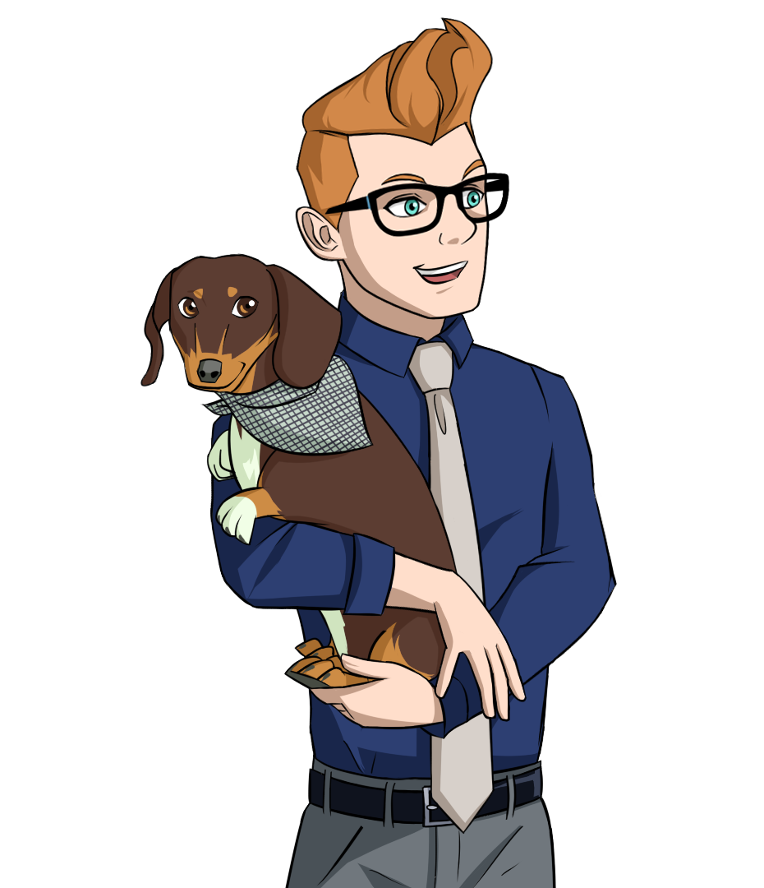
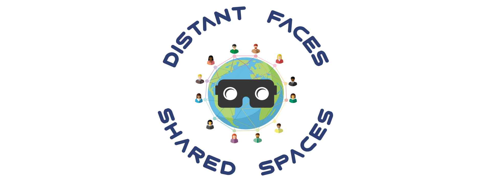

Accessible simulation
Kitchen Cordon Bleu
A narrative inventory audit built as an accessible alternative to VR.
See the case study →
Learning · Experience · Design
From courses, games, simulations, and multimedia to global learning products and the systems behind them, I bring ideas from early concept through strategy, design, development, and delivery.
I’m at my best when a problem leaves room to explore—to prototype, test, learn, and keep working until the pieces become a coherent experience.
Accessible simulation
A narrative inventory audit built as an accessible alternative to VR.
See the case study →
Research through design
Exploring mobile VR, telecollaboration, and a stronger sense of shared place.
Explore the research →Alternate-reality learning
A QR scavenger hunt that grew into a three-week narrative experience.
Enter the story →
Global product development
A reimagined learning model produced with writers and actors worldwide.
Read the case study →